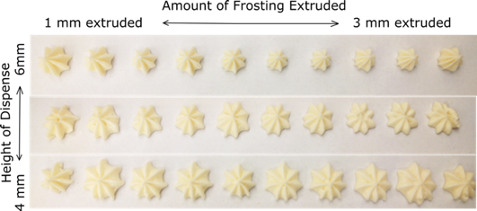
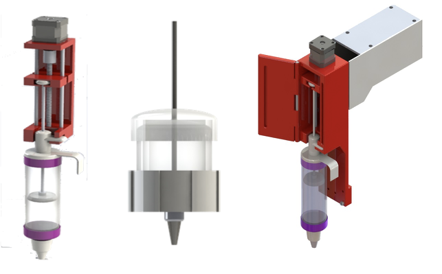

Auto Cake Decorator
System Overview
Project Overview
For our senior design project, 4 friends and I worked on an automatic cake decorator. After 6 months of work, my team won 'Most Technically Complete'.
The goal of this project was to take a user’s image, and recreate it on the surface of an average half sheet cake using icing. It is meant to act as a better tasting alternative to fondant, and a less intensive alternative to designing by hand.
My main focus on the project was the system design, and design/fabrication of mechanical components to ensure that the plotter would move. Other teammates worked on the program that took our input image and converted it to G Code.
Design Choices
Limited Colors
Maximizing dispenser volume, and capping the number of bins that the colors in an image can be approximated to reduced the frequency of the icing changes and minimized user interaction.
Number of Motors
Initially 2 motors were used to move the main arm of the system as it was the heaviest, but this caused sticking because the motors did not perform equally. Instead a single more powerful motor was used.

Image Processing GUI

Rosette Matrix

Dispenser Downselect
Challenges
Rosette Shape
When done by hand, creating a rosette that sticks to the cake surface and is visually appealing is a combination of several small but nuanced processes. It requires a time-varying extrusion force (volume), a time-varying lift speed, and specific start and end height to create peaks. To replicate this without the time-varying aspects, several combinations of extrusion volume, starting height, and cutoff height were tested.
Varied Viscosity
No published data about the flow characteristics of icing, or how it is affected by composition or temperature. To ensure consistent patterns, the system was optimized for use with room temperature icing of a single brand.
System Weight
With the syringe full, the mass of the dispenser was significantly higher. This increased moment led to difficulties moving up and down. A counterweight was added to test the theory, and then replaced with guide rails to form a more elegant solution.